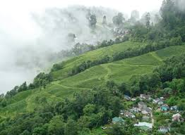
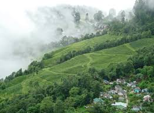
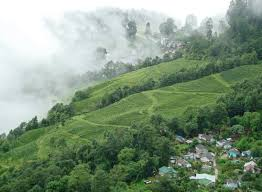
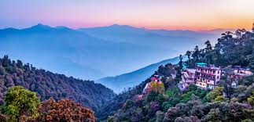
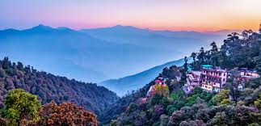

1. Darjeeling
Darjeeling is a town in India's West Bengal state, in the Himalayan foothills. Once a summer resort for the British Raj elite, it remains the terminus of the narrow-gauge Darjeeling Himalayan Railway, or “Toy Train,” completed in 1881. It's famed for the distinctive black tea grown on plantations that dot its surrounding slopes. Its backdrop is Mt. Kanchenjunga, among the world’s highest peaks.The recorded history of the town starts from the early 19th century when the colonial administration under the British Raj set up a sanatorium and a military depot in the region. Subsequently, extensive tea plantations were established in the region and tea growers developed hybrids of black tea and created new fermentation techniques. The resultant distinctive Darjeeling tea is internationally recognised and ranks among the most popular black teas in the world.[5] The Darjeeling Himalayan Railway connects the town with the plains and has some of the few steam locomotives still in service in India.
 
For more details on Darjeeling, follow the link:

For more details on Darjeeling, follow the link:

For more details on Darjeeling, follow the link:
 
For more details on Mussoorie, follow the link:

For more details on Mussoorie, follow the link: